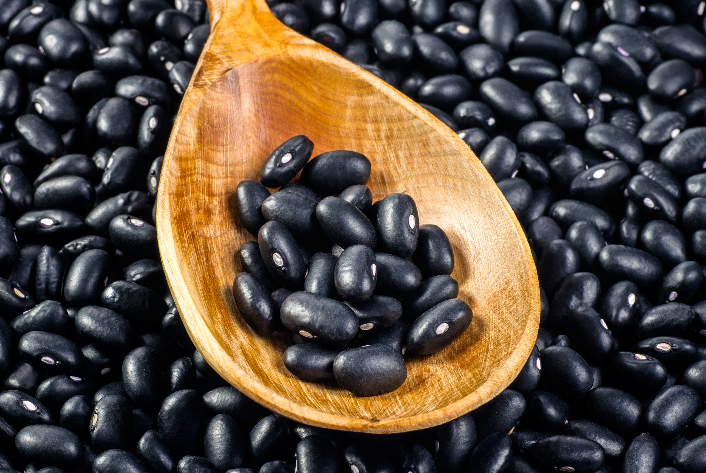
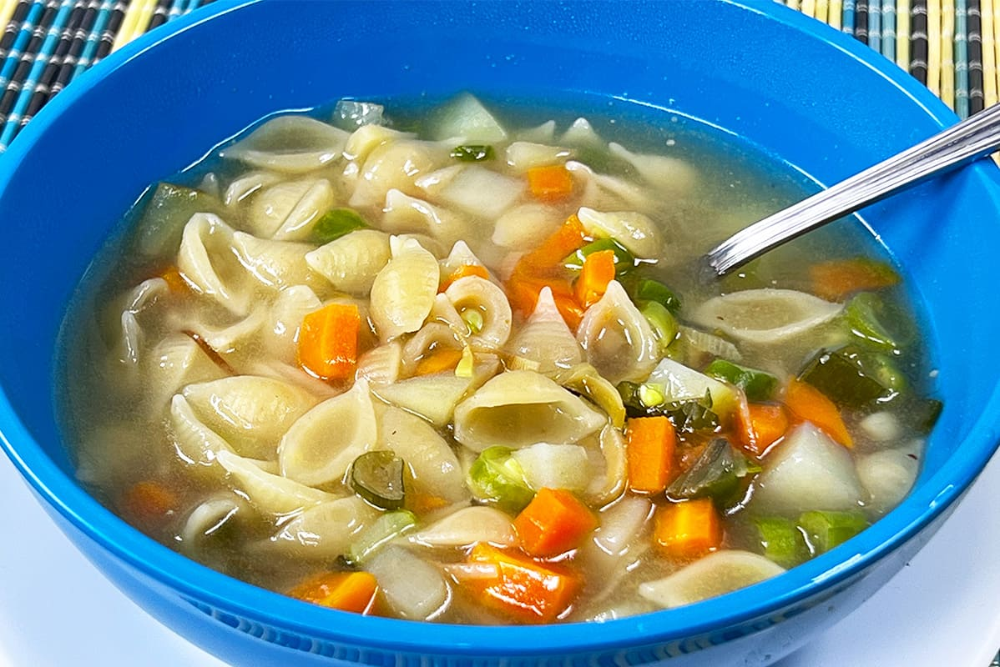
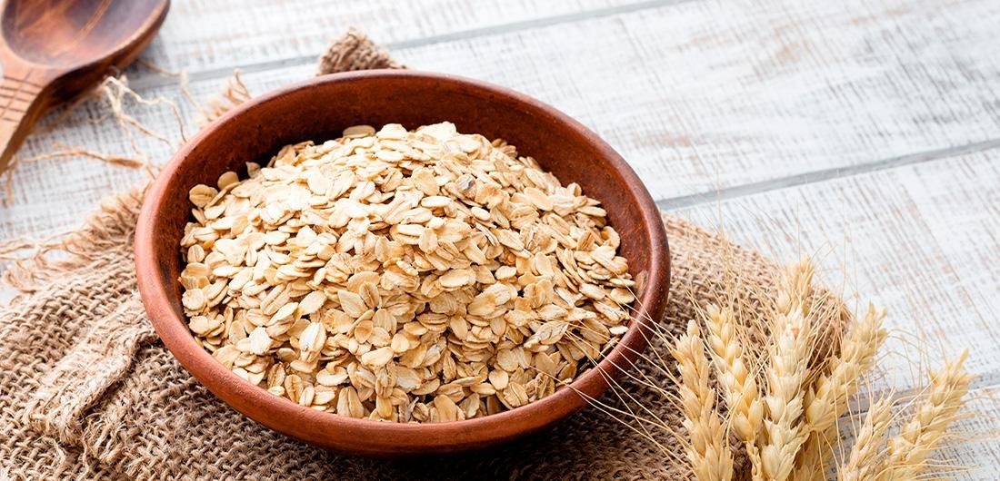
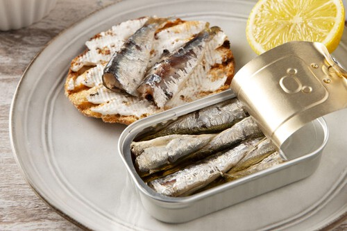
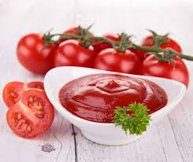

Granito a
Granito
Un proyecto de servicio social para combatir la inseguridad alimentaria en Monterrey
Desde 2025, Monterrey se ha convertido en un destino para miles de personas migrantes que, ante el endurecimiento de políticas migratorias en EE.UU., permanecen en la ciudad sin vivienda ni acceso a alimentación. Muchas de ellas viven en condiciones precarias cerca de los rieles del tren, en zonas del centro metropolitano. Ante esta realidad, nos unimos a Cáritas de Monterrey —organización con más de 40 años de trayectoria en apoyo comunitario— para llevar alimento y dignidad a quienes más lo necesitan. Este proyecto se alinea con los ODS 2 (Hambre Cero) y ODS 3 (Salud y Bienestar) de la Agenda 2030.
207,064
personas en situación de pobreza en Monterrey
128,789
con carencia por acceso a alimentación nutritiva
262,899
sin acceso adecuado a servicios de salud
Nuestro Avance
Cada granito cuenta. Así vamos:
Ayuda ya recibida
Cada donación es un granito más. Gracias a quienes ya sumaron.
Gracias a quienes ya han apoyado
Este proyecto no sería posible sin cada persona que ha decidido contribuir con un granito más. Su generosidad transforma vidas en nuestra ciudad.
¿Qué productos estamos recibiendo?
Todo suma. Aquí te decimos qué necesitamos en este momento ¡cualquier aporte hace la diferencia!
Básico
Azúcar

Básico
Frijol
Básico
Arroz
Básico
Aceite

No perecedero
Atún enlatado

No perecedero
Sopa de pasta
No perecedero
Leche en polvo

No perecedero
Avena

No perecedero
Sardinas en lata

No perecedero
Puré de tomate
Campaña especial Cáritas
Artículos escolares · Campaña de Mochilas
Cáritas está recibiendo mochilas con útiles para niños: cuadernos, lápices, bolígrafos, colores, reglas, sacapuntas y más.
¿Deseas ayudarnos?
Los vecinos y amigos en las colonias Monterrey Centro y Mitras Norte estamos regularmente comunicándonos para realizar colectas.
¡Tenemos fecha de Entrega! Gracias a su ayuda hemos sobrepasado las intenciones del presente proyecto y podremos entregar su ayuda a quienes más lo necesitan:
12 de Junio, 2026
--
días
--
horas
--
min
--
seg
📍 Plaza José S. Vivanco
📍 Condominios Constitución